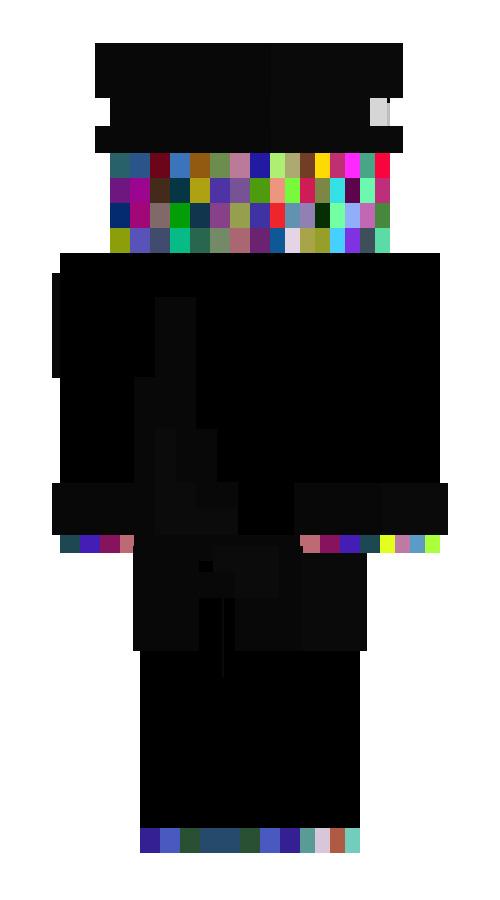

Смотритель маяка
Смотритель маяка — сошедший с ума старик. По его словам, он всю жизнь провёл на Острове.
Внешность
Всё тело Смотрителя усыпано разноцветными квадратами, напоминающими экранные помехи. Он одет в чёрную рабочую форму, уже изношенную за годы службы.
Личность
Смотритель маяка ведёт себя крайне экстравагантно. То, что он говорит, кажется бессмысленным всем, кто его встречает.
Ладно, сынок, хочу тебя предупредить — у меня в руке двадцать хлеба, так что свой следующий ход продумывай крайне аккуратно.
Юхаву, второй день.
Галерея